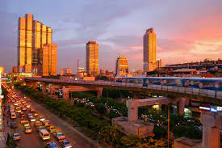
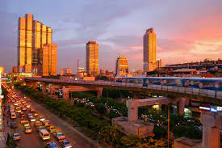

Bangkok, Thailand
Bangkok, the vibrant capital of Thailand, is a city that never sleeps, a place where the modern and the traditional coalesce in a whirlwind of colors, flavors, and experiences. It's a metropolis that exudes energy and offers a rich tapestry of cultural and culinary delights. One of the city's most iconic landmarks is the Grand Palace, a spectacular complex of ornate temples and royal residences that reflect Thailand's deep-rooted heritage. Wat Phra Kaew, within the palace, houses the revered Emerald Buddha, a symbol of spiritual significance. The bustling streets of Bangkok are a sensory explosion, from the lively markets and aromatic street food stalls to the neon-lit skyscrapers and buzzing tuk-tuks. Khao San Road, often dubbed "the backpacker's haven," is a microcosm of this vivacious spirit, offering an eclectic mix of street vendors, bars, and cultural encounters.
One of Bangkok's charms lies in its river, the Chao Phraya, which winds through the city. Along its banks, you'll find majestic temples, luxurious hotels, and a network of water taxis and boats that provide a unique perspective of the city. Food lovers are in for a treat, as Bangkok is a gastronomic paradise. From savory pad Thai to fiery green curry and sweet mango sticky rice, Thai cuisine tantalizes taste buds. The street food culture, exemplified by the famous Chatuchak Weekend Market, is an adventure in itself, where you can savor a cornucopia of dishes. Bangkok's juxtaposition of traditional Thai culture and contemporary urbanity creates a unique atmosphere. It's a place where the timeless beauty of temples and the dynamism of a modern city come together, inviting visitors to immerse themselves in a kaleidoscope of experiences and embark on a journey that stimulates all the senses.
 
